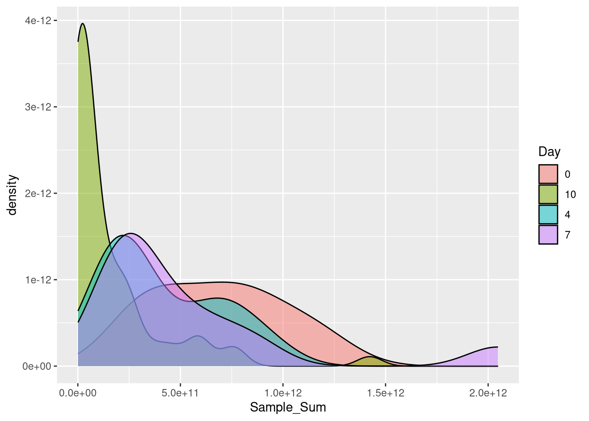
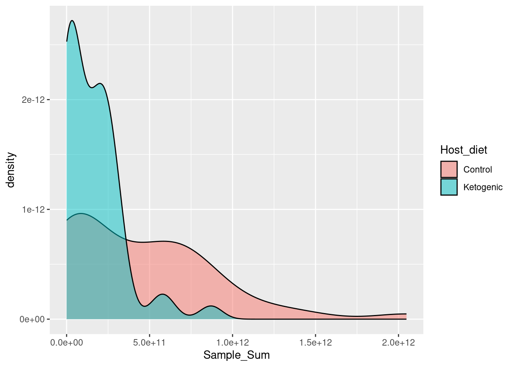
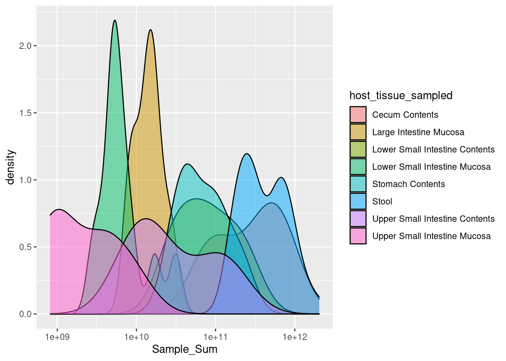
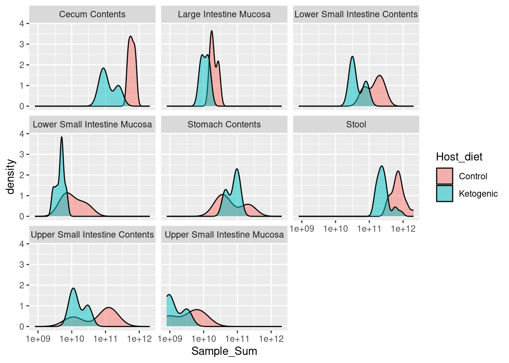

# Efficient loading of the packages
pacman::p_load(tidyverse, install = FALSE)Picking which samples to analyze
Loading packages
meta <- read_csv("barlow_meta.csv")Rows: 116 Columns: 43
── Column specification ────────────────────────────────────────────────────────
Delimiter: ","
chr (35): Run, Assay Type, BioProject, BioSample, BioSampleModel, Cage, Cen...
dbl (5): AvgSpotLen, Bases, Bytes, Dilution, version
dttm (2): ReleaseDate, create_date
date (1): Collection_Date
ℹ Use `spec()` to retrieve the full column specification for this data.
ℹ Specify the column types or set `show_col_types = FALSE` to quiet this message.abund <- read_csv("barlow_abundances.csv")Rows: 103 Columns: 148
── Column specification ────────────────────────────────────────────────────────
Delimiter: ","
chr (4): Sample, Diet, Site, mouse
dbl (144): D_0__Bacteria;D_1__Actinobacteria;D_2__Acidimicrobiia;D_3__Microt...
ℹ Use `spec()` to retrieve the full column specification for this data.
ℹ Specify the column types or set `show_col_types = FALSE` to quiet this message.clean_meta <- meta %>%
select(Run, Day, Dilution, Host_diet, host_genotype, host_tissue_sampled, `Sample Name`)
clean_abund_names <- str_replace_all(abund$Sample, " ", "_")
clean_meta$`Sample Name`[clean_meta$`Sample Name` %in% clean_abund_names] [1] "M5NP_CC" "M5NP_LSI-C" "M5NP_USI-C" "M5NP_SC"
[5] "M4P_LI-S" "M4P_LSI-S" "M4P_USI-S" "M4P_CC"
[9] "M4P_LSI-C" "M4P_USI-C" "M4P_SC" "M3NP_LI-S"
[13] "M3NP_LSI-S" "M3NP_USI-S" "M3NP_CC" "M3NP_LSI-C"
[17] "M3NP_USI-C" "M3NP_SC" "M2NP_LI-S" "M2NP_LSI-S"
[21] "M2NP_USI-S" "M2NP_CC" "M2NP_LSI-C" "M2NP_USI-C"
[25] "M2NP_SC" "M1NP_LI-S" "M1NP_LSI-S" "M1NP_USI-S"
[29] "M1NP_CC" "M1NP_LSI-C" "M1NP_USI-C" "M1NP_SC"
[33] "M6P_D10_Stool" "M6NP_D10_Stool" "M5P_D10_Stool" "M5NP_D10_Stool"
[37] "M4P_D10_Stool" "M4NP_D10_Stool" "M3P_D10_Stool" "M3NP_D10_Stool"
[41] "M2P_D10_Stool" "M2NP_D10_Stool" "M1P_D10_Stool" "M1NP_D10_Stool"
[45] "M6P_D7_Stool" "M6NP_D7_Stool" "M5P_D7_Stool" "M5NP_D7_Stool"
[49] "M4P_D7_Stool" "M4NP_D7_Stool" "M3P_D7_Stool" "M3NP_D7_Stool"
[53] "M2P_D7_Stool" "M2NP_D7_Stool" "M1P_D7_Stool" "M1NP_D7_Stool"
[57] "M6NP_D4_Stool" "M5P_D4_Stool" "M5NP_D4_Stool" "M4P_D4_Stool"
[61] "M4NP_D4_Stool" "M3P_D4_Stool" "M3NP_D4_Stool" "M2P_D4_Stool"
[65] "M2NP_D4_Stool" "M1P_D4_Stool" "M1NP_D4_Stool" "M6NP_D0_Stool"
[69] "M5P_D0_Stool" "M5NP_D0_Stool" "M4NP_D0_Stool" "M3P_D0_Stool"
[73] "M3NP_D0_Stool" "M2P_D0_Stool" "M2NP_D0_Stool" "M1P_D0_Stool"
[77] "M1NP_D0_Stool" "M5P_LSI-S" "M4NP_LSI-S" "M3P_LSI-S"
[81] "M2P_LSI-S" "M3P_LI-S" "M1P_LSI-S" "M6NP_LI-S"
[85] "M6NP_LSI-S" "M6NP_USI-S" "M6NP_CC" "M6NP_LSI-C"
[89] "M6NP_USI-C" "M6NP_SC" "M5NP_LI-S" "M5NP_LSI-S"
[93] "M5NP_USI-S" clean_meta$`Sample Name`[!clean_meta$`Sample Name` %in% clean_abund_names] [1] "GF_SI_Stool_100000X" "GF_SI_Stool_1000X" "GF_SI-S_Cntrl"
[4] "GF_SI-S_100000X" "GF_SI-S_1000X" "GF_SI-S_10X"
[7] "Buffer_Cntrl" "M4P_D0_Stool" "CC_SW_Chow_10000X"
[10] "CC_SW_Chow_1000X_4" "Buffer_100000X" "CC_SW_Chow_1000X_3"
[13] "CC_SW_Chow_1000X_2" "CC_SW_Chow_1000X_1" "CC_SW_Chow_100X"
[16] "CC_SW_Chow_10X" "CC_SW_Chow_4" "CC_SW_Chow_3"
[19] "CC_SW_Chow_2" "CC_SW_Chow_1" "GF_SI_Stool_Cntrl"
[22] "Buffer_1000X" "Buffer_10X" clean_abund_names[!clean_abund_names %in% clean_meta$`Sample Name`] [1] "M1NP_USI-S_noC" "M1P_LSI-S_noC" "M2NP_LI-S_noC" "M2NP_USI-S_noC"
[5] "M3NP_USI-S_noC" "M3P_LI-S_noC" "M4P_LSI-S_noC" "M4P_USI-S_noC"
[9] "M5NP_USI-S_noC" "M6NP_USI-S_noC"clean_meta[clean_meta$`Sample Name` %in% clean_abund_names,]# A tibble: 93 × 7
Run Day Dilution Host_diet host_genotype host_tissue_sampled
<chr> <chr> <dbl> <chr> <chr> <chr>
1 SRR10217991 10 0 Control Swiss Webster Cecum Contents
2 SRR10217992 10 0 Control Swiss Webster Lower Small Intestine Con…
3 SRR10217993 10 0 Control Swiss Webster Upper Small Intestine Con…
4 SRR10217994 10 0 Control Swiss Webster Stomach Contents
5 SRR10217995 10 0 Control Swiss Webster Large Intestine Mucosa
6 SRR10217996 10 0 Control Swiss Webster Lower Small Intestine Muc…
7 SRR10217997 10 0 Control Swiss Webster Upper Small Intestine Muc…
8 SRR10217998 10 0 Control Swiss Webster Cecum Contents
9 SRR10217999 10 0 Control Swiss Webster Lower Small Intestine Con…
10 SRR10218000 10 0 Control Swiss Webster Upper Small Intestine Con…
# ℹ 83 more rows
# ℹ 1 more variable: `Sample Name` <chr>You know, I’ll take it. 93 samples is a good enough number of samples for me to at least start with.
clean_abund <-
abund %>%
rowwise() %>%
mutate(Sample_Sum = sum(c_across(contains(";"))),
Sample = str_replace_all(Sample, " ", "_")) %>%
select(Sample, Sample_Sum, Diet, Site, Day, mouse, Cage)
clean_together <-
clean_meta %>%
rename(Sample = `Sample Name`) %>%
inner_join(clean_abund, by = "Sample")
all(clean_together$Day.x == clean_together$Day.y)[1] TRUEall(clean_together$host_tissue_sampled == clean_together$Site)[1] FALSEall(clean_together$Host_diet == clean_together$Diet)[1] FALSEclean_together %>%
filter(host_tissue_sampled != Site) %>%
select(Site, host_tissue_sampled)# A tibble: 36 × 2
Site host_tissue_sampled
<chr> <chr>
1 Lower SI Contents Lower Small Intestine Contents
2 Upper SI Contents Upper Small Intestine Contents
3 Colon Mucosa Large Intestine Mucosa
4 Lower SI Mucosa Lower Small Intestine Mucosa
5 Upper SI Mucosa Upper Small Intestine Mucosa
6 Lower SI Contents Lower Small Intestine Contents
7 Upper SI Contents Upper Small Intestine Contents
8 Colon Mucosa Large Intestine Mucosa
9 Lower SI Mucosa Lower Small Intestine Mucosa
10 Upper SI Mucosa Upper Small Intestine Mucosa
# ℹ 26 more rows# Okay, they match, but host_tissue_sampled is more descriptive
clean_together %>%
filter(Host_diet != Diet) %>%
select(Host_diet, Diet)# A tibble: 49 × 2
Host_diet Diet
<chr> <chr>
1 Ketogenic Keto
2 Ketogenic Keto
3 Ketogenic Keto
4 Ketogenic Keto
5 Ketogenic Keto
6 Ketogenic Keto
7 Ketogenic Keto
8 Ketogenic Keto
9 Ketogenic Keto
10 Ketogenic Keto
# ℹ 39 more rows#Also match, but Host_diet is better
clean_together %>%
count(Dilution)# A tibble: 1 × 2
Dilution n
<dbl> <int>
1 0 93clean_together %>%
count(host_genotype)# A tibble: 1 × 2
host_genotype n
<chr> <int>
1 Swiss Webster 93final_meta <-
clean_together %>%
select(Run, Day = Day.x, Host_diet, host_tissue_sampled, Sample, Sample_Sum, mouse, Cage)See where differences lay in cell abundances
final_meta %>%
ggplot(aes(x = Sample_Sum, fill = Day)) +
geom_density(alpha = 0.5)
final_meta %>%
ggplot(aes(x = Sample_Sum, fill = Host_diet)) +
geom_density(alpha = 0.5)
final_meta %>%
ggplot(aes(x = Sample_Sum, fill = host_tissue_sampled)) +
geom_density(alpha = 0.5) +
scale_x_log10()
final_meta %>%
ggplot(aes(x = Sample_Sum, fill = Host_diet)) +
geom_density(alpha = 0.5) +
scale_x_log10() +
facet_wrap(~host_tissue_sampled)
Okay cool - it definitely seems like there is potential here for comparisons between diets, especially at a given site.